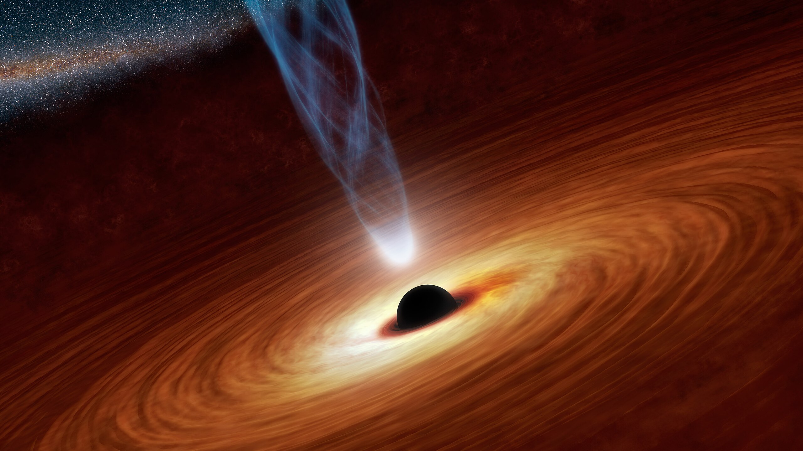

吸积盘基础
May 01, 2024前言： 写这篇学习笔记，旨在提供一个简短的吸积盘基础介绍。我会在学习的同时慢慢更新。希望它对你能有所帮助，让我们开始吧！ :)
目录
1. 简介
吸积盘遍及宇宙的许多场景： 低质量X射线双星、活动星系核（AGN）、激变变星、原恒星、原行星等等。
吸积盘、喷流和外向流在观测上存在联系。理论尝试提供一些模型，并取得了不同程度上的成功。但一些基本问题仍然存在着不确定性。这种情况下，对特定的天体观察或建模取得的进展，会直接影响对其他天体的理解（例如与喷流的神秘联系）。
Figure 1: 黑洞、吸积盘和喷流 (艺术家概念图) | Credit:NASA/JPL-Caltech
2. 吸积理论基础
气体落入一点质量势场 \begin{equation} \Phi = - \frac{GM}{r} \label{eq:1.1} \end{equation} 从距离 \(r_0\) 到 \(r\)，将引力势能转换为动能：\(\Delta\Phi=GM(1/r-1/r_0)\)。假设初始位置很远，则有 \(\Delta\Phi=GM/r\)。到达时的速度-自由落体速度 \(v_{ff}\)为 \begin{equation} \frac12 v^2_{ff}=\frac{GM}{r} \label{eq:1.2} \end{equation}
如果之后气体被吸积，速度变为零，则单位质量耗散的能量为 \(e\) \begin{equation} e=\frac12 v^2_{ff}=\frac{GM}{r} \label{eq:1.3} \end{equation}
如果气体进入距离 \(r\) 开普勒圆轨道，则有 \begin{equation} e=\frac12\frac{GM}{r} \label{eq:1.4} \end{equation}
耗散的能量可能变为气体内能、辐射（通常以光子形式，但中微子损耗能在一些情况也是十分重要的）。
2.1 绝热吸积
绝热流体：不考虑辐射损耗，任何机械能耗散都留在局域吸积流中。对于一固定绝热指数 \(\gamma\) 的绝热理想气体，单位质量内能为 \begin{equation} e=\frac{P}{(\gamma-1)\rho} \label{eq:1.5} \end{equation}
状态方程（EoS）为 \begin{equation} P=\frac{\mathcal{R}\rho T}{\mu} \label{eq:1.6} \end{equation} 这里，\(\mathcal{R}\) 是气体常数，\(\mu\) 是每个粒子的平均原子质量。我们可以得到耗散发生后气体的温度 \begin{equation} T=\frac12 (\gamma-1)T_{vir} \label{eq:1.7} \end{equation} \(T_{vir}\)是位力温度，定义为 \begin{equation} T_{vir}=\frac{GM\mu}{\mathcal{R}r}=\frac{gr\mu}{\mathcal{R}} \label{eq:1.8} \end{equation} 其中 \(g\) 是距离 \(r\) 处的重力加速度。在一温度接近 \(T_{vir}\) 的大气中，声速 \(c_s=(\gamma \mathcal{R}T/\mu)^{1/2}\) 接近系统逃逸速度。流体静力压强标高，\(H\equiv\mathcal{R}T/(\mu g)=\frac12(\gamma-1)r\) ，正比于 \(r\)。这样的大气可能在一相对很短的时标内，以星风的形式蒸发掉。这一点可以由能量守恒得出：如果能量不通过辐射形式损失，流体在落入重力势时获得的能量也足以将其再次移出。
一个简单的例子，球对称绝热吸积（Bondi，1952）。这样的吸积只能在 \(\gamma\le 5/3\) 时才能发生。\(\gamma\) 越低，吸积气体温度越低，因而越容易留在势场中。发生大致球对称绝热吸积的一个经典情况是超新星爆缩：当中心温度高到可以使辐射场分解原子核， \(\gamma\) 下降，包层通过吸积激波塌缩到正在形成的中子星。另一个情况是索恩-祖特阔夫（Thorne-Zytkow）天体，那里的 \(\gamma\) 由于粒子对产生而降得很低，引起黑洞的绝热吸积。
球对称绝热吸积很快，在力学时标（与自由落体时标或开普勒轨道时标等阶）下进行 \begin{equation} \tau_{d}=\frac{r}{v_K}=\Omega_K^{-1}=\left(\frac{r^3}{GM}\right)^{1/2} \label{eq:1.9} \end{equation} \(v_{K}\) 和 \(\Omega_K\) 分别是开普勒轨道速度和角频率。
当辐射损耗不可忽略时，吸积气体可以不受 \(\gamma\) 大小的限制而保持冷却，这时Bondi的临界值 \(\gamma=5/3\) 将不再有效。在这种情况下，吸积盘的温度通常要远低于位力温度。
2.2 致密天体附近温度
考虑一半径 \(R=10\text{km}\)，质量 \(M=1.4 M_\odot\) 的中子星表面吸积，自由落体速度 \(v_{ff}/c\approx0.4 c\)（这是牛顿近似；真正的值要用广义相对论描述，与该近似有所不同）。其位力温度为 \(T_{V}\sim 2\times10^{12}\text{K}\)，对应单位粒子平均能量\(150\text{MeV}\)。
这并不是我们预期的实际温度，因为达到此温度之前有其他过程发生。如果吸积是绝热的，则其中一个过程是产生致密辐射场。单位沉降粒子释放的能量不变，但被很多光子共用。在高于电子静止质量（\(\approx 0.5\text{MeV}\)）的温度下，除了光子之外还会产生电子-正电子对\(e^\pm\)。这些电子-正电子对会占据吸积的大部分能量，通常将温度限制在几个\(\text{MeV}\)。
然而，已观测到的大多数吸积盘，温度都不会接近\(1\text{MeV}\)，因为吸积很少是绝热的。逃逸光子导致能量损失（或者，在一些极端情况下是中微子）。例外是辐射低效吸积流，将在13章节讲解。
辐射损失
Bibliography
- Accretion Processes in Astrophysics: XXI Canary Islands Winter School of Astrophysics. (Cambridge University Press, New York, NY, USA, 2014). ISBN: 9781107030190.